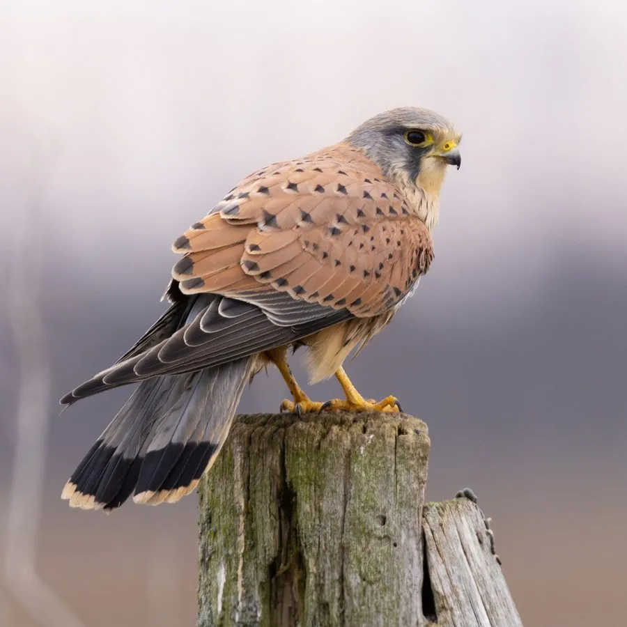

鸟类 · 动物界
红隼 Falco tinnunculus

常见的隼类之一，红褐色背羽配深色斑点，能在空中定点悬停搜寻田鼠，也常在城市高楼和古建筑上营巢。
- 分类
- 门脊索动物门纲鸟纲目隼形目科隼科属隼属
- 栖息环境
- 农田、草原、城市建筑、山地和荒漠边缘，适应多种环境
- 地理分布
- 欧亚大陆和非洲广泛分布，中国各地均有记录，北方多为候鸟
- 保护级别
- IUCN 无危（LC）；中国国家二级保护动物
物种志
红隼体长 32–39 cm，体重 136–315 g，翼展 65–82 cm。雄鸟头部灰蓝，背部红褐色并带黑色斑点，尾羽灰色带黑色横斑，末端有黑色宽带；雌鸟通体红褐，密布深色横斑。它的翅膀尖长，尾巴较长，飞行时灵活轻快，眼睛周围和蜡膜为黄色。
红隼广泛分布于欧亚大陆和非洲，中国各地均有分布，北方种群冬季南迁。它们栖息在农田、草原、城市和山地，常在空中定点悬停，观察地面上的田鼠、蝗虫和蜥蜴，再突然俯冲捕捉。红隼也常利用城市高楼、古塔和桥梁的缝隙营巢，每窝产卵 3–6 枚，孵化约 28–30 天。由于适应力强、数量稳定，红隼被列为无危物种，在中国属于国家二级保护动物。
形态与习性
- 食性田鼠、蝗虫、蜥蜴和小型鸟类
- 体长32–39 cm
- 体重136–315 g
- 翼展65–82 cm
- 繁殖每窝 3–6 枚卵，孵化约 28–30 天
- 悬停能迎着风在空中定点悬停搜寻猎物
- 寿命野外约 10–15 年
趣味知识
- 红隼能迎着风在空中定点悬停，像被一根线吊在半空。
- 它特别爱吃田鼠，是农田里的天然灭鼠能手。
- 红隼很适应城市，常在高楼和古塔的缝隙里营巢。
- 悬停时红隼的尾巴会不断调整角度，以保持身体平衡。